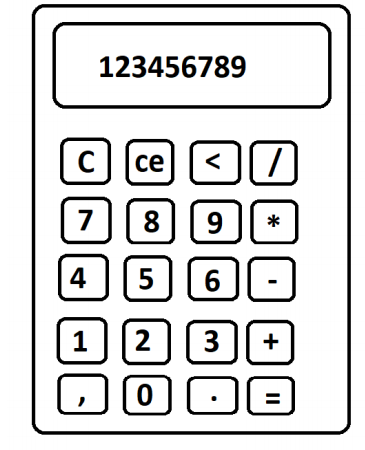

ADVANCED PROGRAMMING DÖNEM PROJESİ KONU TEKLİFİ VE TASARIMI

Dönem projemde yapmak istediğim şey basit ve kullanışlı bir hesap makinesi.
İşlem butonları ve sayı butonları tanımlamaları ile hesaplamaları yapacağım.
Dinamik kullanışlı ve minimal düzende bir hesap makinesidir.